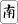

（02）前門虎 後門狼(極難) 解答
熱血の志封 投稿日：2007/09/10(Mon)甲は四副露して手のうちは４枚ですが、聴牌していません。ここで甲はツモしてテンパイしましたが、ここから何を切っても乙へ放銃となります....乙は門前清の三面聴ですが、どの牌でロン上がりしても怪物（大役）が完成します。そしてロン上がりした場合、大役の台数はアガリ牌によってすべて異なります（役の計算上、荘家と風位は関係ありません）。このような乙の手牌の一例と台数を示して下さい。またテンパイしていなかったときの甲の４枚の手牌と、ツモした牌は何でしょう。そして甲は何牌を捨てたら損害が最小になるでしょう。チー

ポン

參考解答乙の参考の手牌
ロン上がり可能な台数
小四喜（8） 四暗刻(5) 混一色(4) 混全帶幺(2) 四帰一(1)、門前清(1) 計21台
小四喜(8) 四暗刻(5) 混一色(4) 門前清(1) 計18台。
大四喜(16) 混一色(4) 三暗刻(2) 混全帶幺(2) 門前清(1) 計25台。
甲の元の４枚の参考手牌
ツモ牌甲は